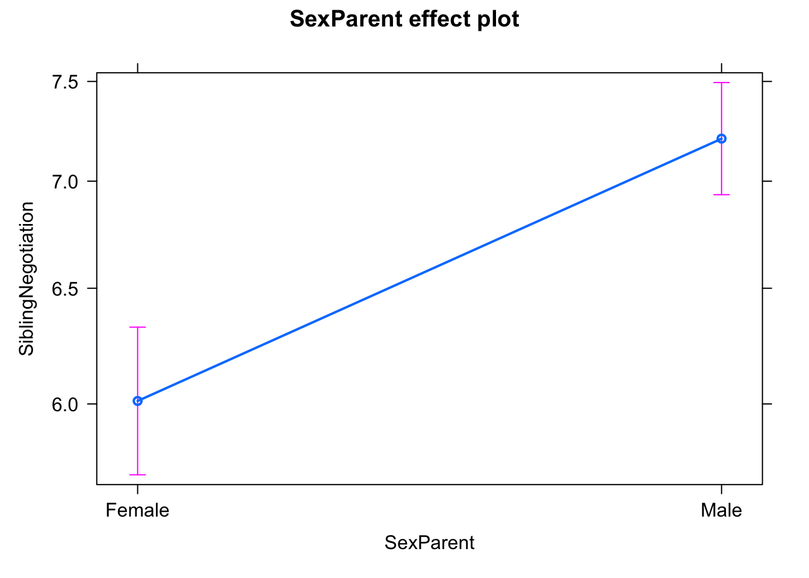
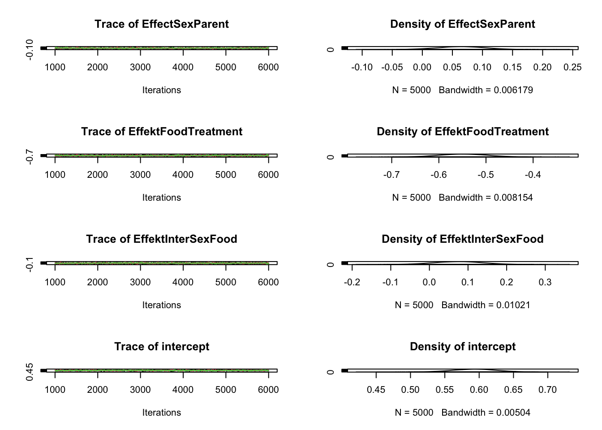
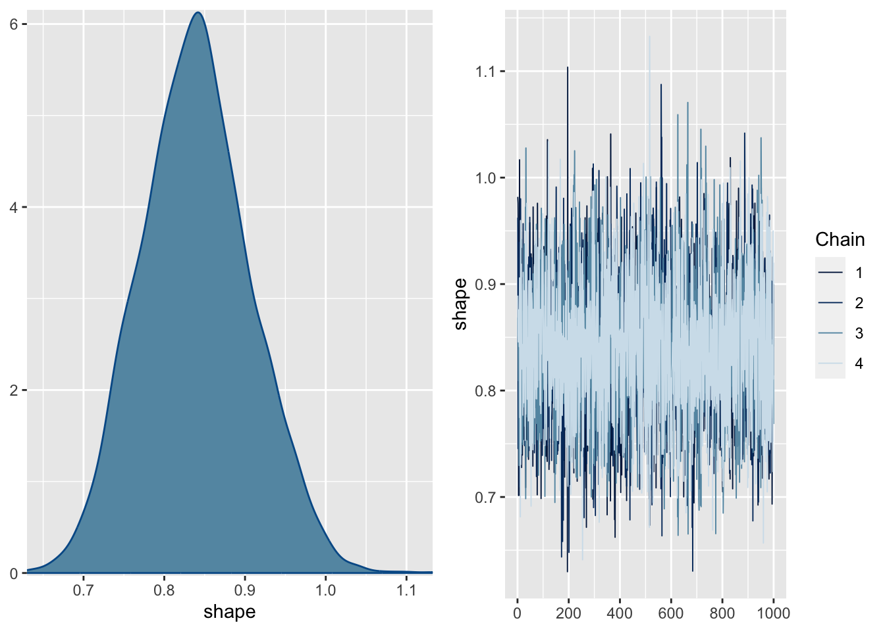

For this case study, we will use the fairly well known Owl dataset which is provided in glmmTMB (see ?Owls for more info about the data). A frequentist base model would be:
library(glmmTMB)library(effects)
Loading required package: carData
lattice theme set by effectsTheme()
See ?effectsTheme for details.
m1 <-glm(SiblingNegotiation ~ SexParent, data=Owls , family = poisson)summary(m1)
Call:
glm(formula = SiblingNegotiation ~ SexParent, family = poisson,
data = Owls)
Deviance Residuals:
Min 1Q Median 3Q Max
-3.7971 -3.4676 -0.4639 1.6272 6.7678
Coefficients:
Estimate Std. Error z value Pr(>|z|)
(Intercept) 1.79380 0.02605 68.847 < 2e-16 ***
SexParentMale 0.18154 0.03272 5.548 2.89e-08 ***
---
Signif. codes: 0 '***' 0.001 '**' 0.01 '*' 0.05 '.' 0.1 ' ' 1
(Dispersion parameter for poisson family taken to be 1)
Null deviance: 4290.9 on 598 degrees of freedom
Residual deviance: 4259.7 on 597 degrees of freedom
AIC: 5944.5
Number of Fisher Scoring iterations: 5
plot(allEffects(m1))

Exercise 1: fit this GLM using a Bayesian approach, e.g. Jags, STAN or brms
Tip
For STAN and JAGS, you will have to transform categorical variables to dummy coding, i.e.
sex =as.numeric(Owls$SexParent) -1
Then you can code
sexEffect * sex[i]
Exercise 2: include a log offset to the model too account for BroodSize
m2 <-glm(SiblingNegotiation ~ FoodTreatment*SexParent +offset(log(BroodSize)), data=Owls , family = poisson)
Exercise 3: check residuals and / or add obvious additional components to the model inspired by the frequentist example here.
Solution using brms
Here a base model with random effect
library(brms)m2 = brms::brm(SiblingNegotiation ~ FoodTreatment * SexParent+ (1|Nest) +offset(log(BroodSize)), data = Owls , family = negbinomial)
Family: negbinomial
Links: mu = log; shape = identity
Formula: SiblingNegotiation ~ FoodTreatment * SexParent + (1 | Nest) + offset(log(BroodSize))
Data: Owls (Number of observations: 599)
Draws: 4 chains, each with iter = 2000; warmup = 1000; thin = 1;
total post-warmup draws = 4000
Group-Level Effects:
~Nest (Number of levels: 27)
Estimate Est.Error l-95% CI u-95% CI Rhat Bulk_ESS Tail_ESS
sd(Intercept) 0.40 0.10 0.21 0.62 1.01 1301 2035
Population-Level Effects:
Estimate Est.Error l-95% CI u-95% CI Rhat
Intercept 0.71 0.14 0.45 0.99 1.00
FoodTreatmentSatiated -0.77 0.17 -1.10 -0.44 1.00
SexParentMale -0.03 0.15 -0.31 0.26 1.00
FoodTreatmentSatiated:SexParentMale 0.15 0.20 -0.24 0.56 1.00
Bulk_ESS Tail_ESS
Intercept 2402 2588
FoodTreatmentSatiated 3112 2955
SexParentMale 3811 2950
FoodTreatmentSatiated:SexParentMale 3823 3213
Family Specific Parameters:
Estimate Est.Error l-95% CI u-95% CI Rhat Bulk_ESS Tail_ESS
shape 0.84 0.07 0.71 0.98 1.00 4891 2904
Draws were sampled using sampling(NUTS). For each parameter, Bulk_ESS
and Tail_ESS are effective sample size measures, and Rhat is the potential
scale reduction factor on split chains (at convergence, Rhat = 1).
plot(m2, ask =FALSE)


C.2 CNDD estimated, Comita et al., 2010
This is the model from Comita, L. S., Muller-Landau, H. C., Aguilar, S., & Hubbell, S. P. (2010). Asymmetric density dependence shapes species abundances in a tropical tree community. Science, 329(5989), 330-332.
The model was originally written in WinBugs. The version here was here slightly modified to be run with JAGS. Rerunning these models were part of the tests we did to settle on the methodology in Hülsmann, L., Chisholm, R. A., Comita, L., Visser, M. D., de Souza Leite, M., Aguilar, S., … & Hartig, F. (2024). Latitudinal patterns in stabilizing density dependence of forest communities. Nature, 1-8.
Our tests indicated that this model is excellent in recovering CNDD estimates from simulations. The main reason we didn’t use a similar model in Hülsmann et al., 2024 were computational limitations and the difficulty to include splines on the species-specific density responses in such a hierarchical setting.
Task: go through the paper and the code and try to understand what the structure of the model!
model{for (i in1:N) { SD[i] ~dbern(p[i]) SD_sim[i] ~dbern(p[i])logit(p[i]) <- B[SPP[i], ] %*% PREDS[i, ] + u[PLOT[i]] }# Standard Random intercept on plotfor (m in1:Nplots) { u[m] ~dnorm(0, a.tau) } a.sigma ~dunif(0, 100) a.tau <-1/ (a.sigma * a.sigma)#redundant parameterization speeds convergence in WinBugs, see Gelman & Hill (2007)for (k in1:K) {for (j in1:Nspp) { B[j, k] <- xi[k] * B.raw[j, k] } xi[k] ~dunif(0, 100) }#multivariate normal distribution for B values of each speciesfor (j in1:Nspp) { B.raw[j, 1:K] ~dmnorm(B.raw.hat[j, ], Tau.B.raw[, ])#G.raw is matrix of regression coefficients for species-level model#ABUND is species-level predictors (abundance and shade tolerance)for (k in1:K) { B.raw.hat[j, k] <- G.raw[k, ] %*% ABUND[j, ] # ABUND needs to be matrix w/ 1st column all 1's } }#priors for G and redundant parameterizationfor (k in1:K) {for (l in1:3) { G[k, l] <- xi[k] * G.raw[k, l] G.raw[k, l] ~dnorm(0, 0.1) } }#covariance matrix modeled using scaled inverse wishart model Tau.B.raw[1:K, 1:K] ~dwish(W[, ], df) df <- K +1 Sigma.B.raw[1:K, 1:K] <-inverse(Tau.B.raw[, ])# correlationsfor (k in1:K) {for (k.prime in1:K) { rho.B[k, k.prime] <- Sigma.B.raw[k, k.prime] /sqrt(Sigma.B.raw[k, k] * Sigma.B.raw[k.prime, k.prime]) }# sigma.B[k] <-abs(xi[k]) *sqrt(Sigma.B.raw[k, k]) }################ Predictions ############# Addition to original model (Nov 2019)# to estimate the effect of mortality (response) when changing 1 unit on x-axis# data (old, read with the name 'txt') is centered but not scaled, therefore 'zero' is here the value of '-6.81'for (i in1:N) { baseMort[i] =ilogit(B[SPP[i], 1] * PREDS[i, 1] + B[SPP[i], 2] * (-6.81) + B[SPP[i], 3:5] %*% PREDS[i, 3:5]) conMort[i] =ilogit(B[SPP[i], 1] * PREDS[i, 1] + B[SPP[i], 2] * (-5.81) + B[SPP[i], 3:5] %*% PREDS[i, 3:5])# relConEffekt[i] <- (conMort[i] - baseMort[i]) / baseMort[i]# hetEffekt[i] <- ilogit(B[SPP[i],1] * PREDS[i,1] + B[SPP[i],2] * PREDS[i,3]^CC[SPP[i]] + B[SPP[i],3] * 1 + B[SPP[i],4:5] %*% PREDS[i,4:5]) - ilogit(B[SPP[i],1] * PREDS[i,1] + B[SPP[i],2] * PREDS[i,3]^CC[SPP[i]] + B[SPP[i],3] * 0 + B[SPP[i],4:5] %*% PREDS[i,4:5]) }}